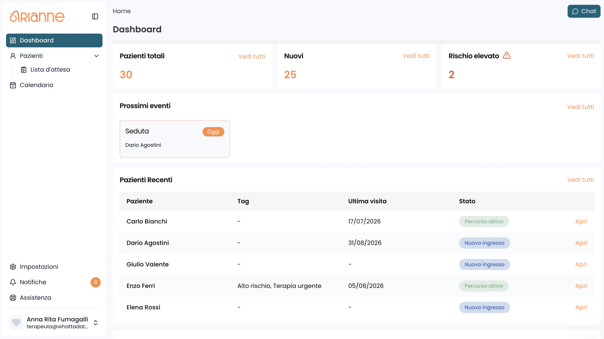

A space for the patient.
Record symptoms, thoughts and emotions, complete guided reflections and choose what to share with the therapist.
A digital mental health platform that connects a patient’s daily experience with the therapist’s clinical view—one care path, two purpose-built interfaces.

Record symptoms, thoughts and emotions, complete guided reflections and choose what to share with the therapist.
Manage sessions, assessments and progress in one clinical view, using the context the patient chooses to share.
The patient records experiences while they are still fresh.
Prompts and questionnaires help turn moments into useful context.
The patient chooses what becomes part of the therapeutic conversation.
The therapist can prepare, discuss and follow the path over time.
Video sessions, scheduling and support for online or in-person care.
Daily check-ins, questionnaires and progress signals connected to the care path.
Digital tests, psychometric scales and patient information in one professional view.
Personal reflection stays distinct until the patient chooses to share it.
Explore the dedicated website for access, product details and the next step that fits your role.